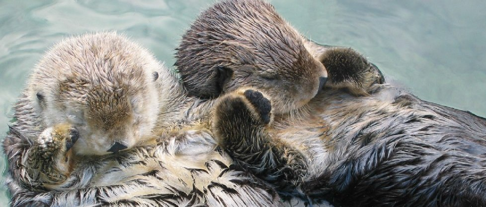

The sea otter (Enhydra lutris) |
|||||||||
is a marine mammal native to the coasts of the northern and eastern North Pacific Ocean. Adult sea otters typically weigh between 14 and 45 kg (30 and 100 lb), making them the heaviest members of the weasel family, but among the smallest marine mammals. Unlike most marine mammals, the sea otter's primary form of insulation is an exceptionally thick coat of fur, the densest in the animal kingdom. Although it can walk on land, the sea otter is capable of living exclusively in the ocean. |
 |
||||||||
|
 | ||||||||
Facts:
|
|||||||||
Source: Wikipedia |
|||||||||